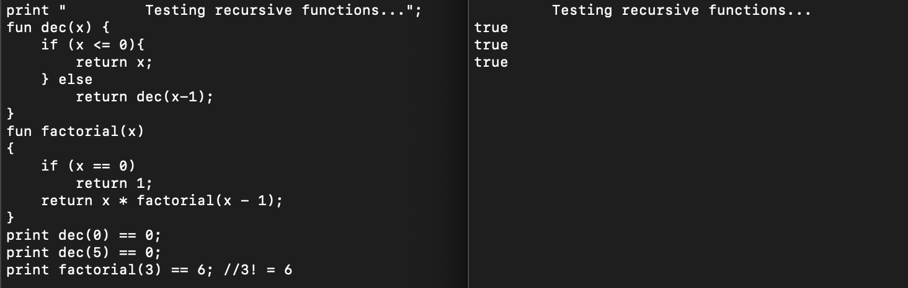
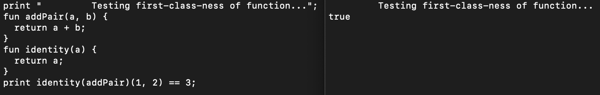
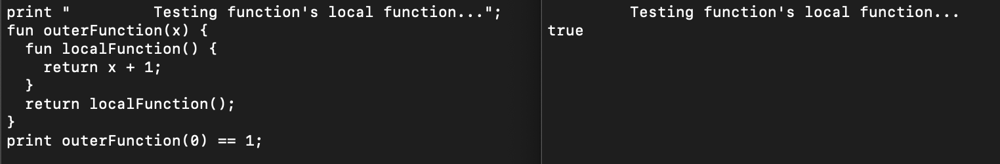
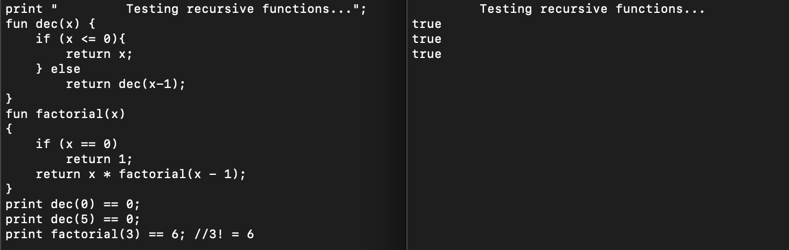
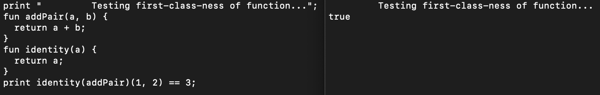
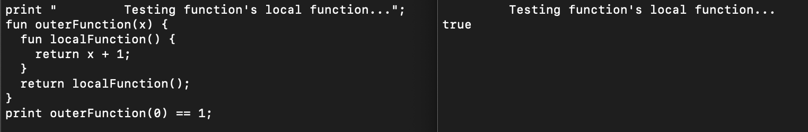

JLox Interpreter
Spring 2022 • CS 403
Language used: C#
Members
| Name | CWID | Email Address | Time Spent |
|---|---|---|---|
| Cara Cannarozzi | 11970792 | cacannarozzi@crimson.ua.edu | 13 hours |
| Madeline Moore | 11884126 | mcmoore11@crimson.ua.edu | 13 hours |
| Peter Zhang | 11861641 | pwzhang@crimson.ua.edu | 10 hours |
Implementation Task Distribution
| Task | Percentage of Task | ||
|---|---|---|---|
| Cara Cannarozzi | Madeline Moore | Peter Zhang | |
| Research/Learning | 33.33% | 33.33% | 33.33% |
| Design | 33.33% | 33.33% | 33.33% |
| Implementation of Code | 35.00% | 35.00% | 30.00% |
Research/Learning
Since we already read most of the book, Crafting interpreters, together for project one, we were already familiar with the language. Throughout the development of our version of the Lox interpreter we heavily referenced the book. We chose to use the C# language to implement our version of Lox since it is similar to Java. Even though they are similar, there are still quite a few differences. We had to research C# in order to implement our version of Lox. Thankfully there are plenty of resources to help with this. We used Microsoft's C# documentation and also a table from Tangible Software Solutions that had common C# and Java equivalents. The documentation for C# can be found here and the table can be found here. After learning about C# we were ready to begin creating our interpreter.
Design
Although C# and Java were similar languages, there were still quite a few differences, and some of these caused us to have to make some selective design choices, such as:
- Following C#'s naming convention with some of our own changes. such as using PascalCasing when naming a class or struct, beginning interface names with "I," using implicit typing for local variables when possible, capitalizing method names, and using try-catch for most exception handling.
- Using a List in place of a Stack to implement scopes to resolve statements
- Using a Dictionary in place of a HashMap
- Using "readonly" for immutable variables in place of "final"
- Using namespaces in place of packages
- Using "foreach" loops
Implementation of Code
To implement this code, we met as a group many times until the project was complete. We used a pair programming approach by having one group member broadcast their screen onto a TV in a group study room in Gorgas. We implemented the interpreter in the same order that Crafting Interpreters implements jlox. This provided us with a recipe for the interpreter and a more detailed guide to the lox language. We used Rider as our IDE because it's more compatible with C#. Furthermore, we used Rider's debugger as our main tool to fix our project, since it provided a detailed stack trace that's capable of showing the value of every variable during every step of the project's execution. This was especially helpful when fixing our Environment class, since we could see the exact contents of an environment during any point of execution. Debugging dominated the total time spent working on this project. The bug we spent the longest time squashing was the evaluation of return statements. Our program would simply return a value when evaluating a return statement, instead of jumping forward to the original function call. To correct this, we used exceptions to throw the evaluated Return value and catch it in the LoxFunction class where the function is originally called.
Members
| Name | CWID | Email Address | Time Spent |
|---|---|---|---|
| Cara Cannarozzi | 11970792 | cacannarozzi@crimson.ua.edu | 4 hours |
| Madeline Moore | 11884126 | mcmoore11@crimson.ua.edu | 4 hours |
| Peter Zhang | 11861641 | pwzhang@crimson.ua.edu | 8 hours |
Testing Task Distribution
| Task | Percentage of Task | ||
|---|---|---|---|
| Cara Cannarozzi | Madeline Moore | Peter Zhang | |
| Fix Tim Budd's C++ Kamin Lisp Interpreter | 15.00% | 15.00% | 70.00% |
| Testing Script | 5.00% | 5.00% | 90.00% |
| Test Cases | 40.00% | 40.00% | 20.00% |
Fix Tim Budd's C++ Kamin Lisp Interpreter
We wanted something to compare our test outputs to. Kamin references Tim Budd's C++ version of the Kamin interpreters here and the download for Tim Budd's code can be found here on the CMU AI repository. Since Tim Budd's C++ implementation was made in 1994 it did not work with a modern compiler, we had to manually update each file to compile. This involved renaming true and false, fixing imports, replacing gets with fgets, and other small changes. Once the program was able to compile, we used the program to aid our development and testing.
Testing Script
We used a bash script to help automate our tests. The bash script is named "tester.sh" and it is located in the main directory. It is hardcoded to specifically work with our project directory. We updated a 1994 C++ version of Kamin's Lisp Interpreter to work with a modern day C++ compiler. The testing script ask to run either a specified single test case or all of the test cases. It will then compile Kamin's Lisp Interpreter. Then the tester will then run the test case(s) on the C++ Kamin Interpreter and our own interpreter and compare the outputs. If the resulting outputs are the same then the test passes.
Below, to the right you can see the output of our tester when we ran it. To the left there is a list of our test cases. You can view each test case individually along with the output of our interpreter (the output is the same as Tim Budd's version of Kamin's Lisp Interpreter).
Test Cases
Choose the test case to view:
- Test Case 1
- Test Case 2
- Test Case 3
- Test Case 4
- Test Case 5
- Test Case 6
- Test Case 7
- Test Case 8
- Test Case 9
- Test Case 10
- Test Case 11
- Test Case 12
- Test Case 13
- Test Case 14
- Test Case 15
- Test Case 16
- Test Case 17
- Test Case 18
- Test Case 19
- Test Case 20
- Test Case 21
- Test Case 22
- Test Case 23
- Test Case 24
- Test Case 25
 







Requirements
This project has a few requirements. They are listed below.
-
Python3 - For running the interpreter
- You can get Python3 from this link.
-
Bash - For running the tester
- Bash typically comes with Linux and MacOS. If you are Windows you can install Cywgin in order to run bash scripts. You can find the installation page here.
-
C++ - For running the tester
- MacOS comes with a C++ compiler (Apple Clang). If you are using Windows or Linux, any C++ compiler should work.
Interpreter Modes
This project was made using python3. The interpreter itself is like Python3 since it has two modes. It can either interpret Lisp code from the command line or from a file. The file mode uses argv to read in the name of the file to interpret.
Interpreting code from the command line
To run the interpreter (reading from command line), type the following into the command line while in the main directory:
$ python3 src/project1.py
Interpreting code from a file
To run the interpreter (reading a file), type the following into the command line while in the main directory:
$ python3 src/project1.py LISPFILE.lisp
Where LISPFILE.lisp is the name of the file you want to read.
Running the tester
The tester is a bash script that can be run from the command line. You can run the tester by typing the following into the command line while in the main directory:
$ bash tester.sh
Using the tester
Once you have ran the tester, it will prompt you for a test case to run. You can either type a specific test case number or type "ALL" to run all test cases. The tester will run run the case(s) and print if the interpreter passed or failed the test case(s).
Common Problems
These are some fixes for common problems.
- If you are using a Windows machine, make sure the file line endings are LF and not CRLF. CRLF line endings will break the tester.